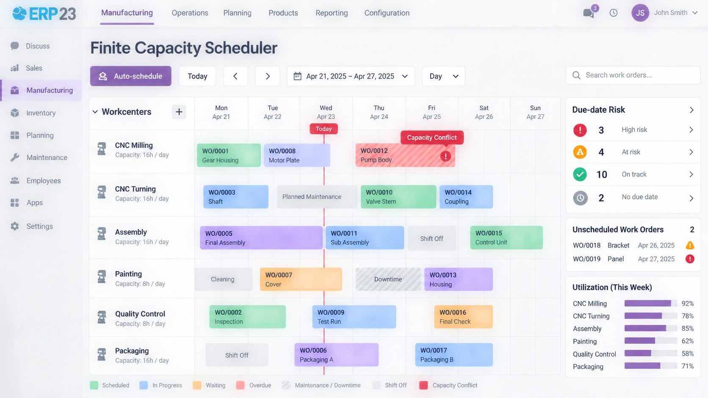

Drag-and-drop Gantt scheduler that prevents double-booking a workcenter and reschedules work orders against real capacity.
Standard manufacturing scheduling assumes infinite capacity: work orders get planned dates, but nothing stops two of them landing on the same workcenter at the same time. The Finite Capacity Scheduler closes that gap with a drag-and-drop Gantt view of every work order grouped by workcenter, automatic red-flagging of any capacity conflict, and a one-click "Auto-schedule" action that slots unscheduled work orders into the next free capacity window, prioritizing whichever manufacturing order is closest to its due date. A due-date risk indicator surfaces manufacturing orders that are likely to miss their deadline given the current schedule, before it becomes a customer-facing problem. It reads and writes the same planned-date fields core Manufacturing already uses, so existing reports, kanban views and workflows keep working unchanged. Built for make-to-order and job-shop manufacturers running multiple workcenters where a scheduling clash costs real time on the shop floor.
Every work order, grouped by workcenter, with status and planned dates at a glance.
Automatically flags any two work orders overlapping the same workcenter beyond capacity.
Places unscheduled work orders into the next available slot, respecting due dates.
Flags manufacturing orders likely to miss their deadline given the current schedule.
See each workcenter's scheduled load against its real weekly capacity.
Configure shifts, downtime and capacity per shift per workcenter.
The scheduler doesn't introduce a parallel planning model. It works directly against the same date_start/date_finished fields core Manufacturing already uses, so every existing report, kanban view, and automation keeps working exactly as before — you get finite-capacity scheduling without adopting a second system of record.
ERP23
Developed and maintained by ERP23.
Website: https://www.erp-23.com/
Email: erp23@brainstation-23.com